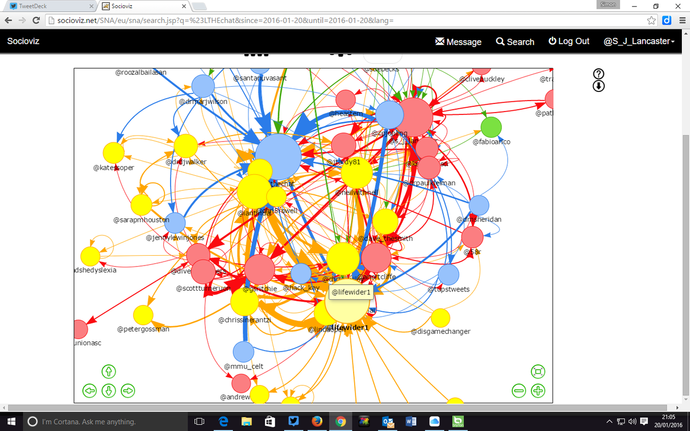

Edit
#LTHEchat No 43 with Prof. Norman Jackson
This LTHEchat explored how, what, why and when creativity emerges from and through our own developmental projects be they personal, professional and/or organisational.
- #LTHEchat No 43 with Prof. Norman Jackson http://lthechat.com/2016/01/15/lthechat-no-43-with-prof-norman-jackson pic.twitter.com/YIEShIBkHG
- #LTHEchat is back Wednesday 8pm with Prof. Norman Jackson @lifewider1 to 'Explore Creativity in Development http://wp.me/p4QBCl-hT
- I'm looking forward to it https://twitter.com/suebecks/status/688663639126077440
- @lifewider1 so is the #LTHEchat community Norman!
- Explore #Creativity in #Development with @lifewider1 #LTHEchat at 8 on Wed http://lthechat.com @LTHEchat pic.twitter.com/VWPoNaNVEG
- #loveld - love #lthechat - this Weds it's all about the creativity: http://lthechat.com/2016/01/15/lthechat-no-43-with-prof-norman-jackson/ Go on,you know you want to #becomingeducational
- Join #LTHEchat weekly Tweetchat - Interesting weekly topics, fast,useful CPD, fabulous people (!) https://twitter.com/suebecks/status/685839977679327233
- Whoo hoo Looking forward to this tomorrow evening :) #LTHEchat @susaltteam @lifewider1 https://twitter.com/LTHEchat/status/688053707473338368
- Looking forward to facilitating Prof. Norman Jackson's @lifewider1 Twitter session for #LTHEchat at 8pm this evening...
- #LTHEchat @lifewider1 Norman also suggests bringing some examples of where you have tried to develop, or innovate in, your own practice.
- #LTHEchat You can follow Prof. Jackson via @lifewider1 and view his profile and links to his work at http://www.normanjackson.co.uk
- Open invitation to join exploring creativity in development processes and practices tonight 8pm UK time #LTHEchat http://lthechat.com/
- Have completed this survey on the role creativity in HE for the #LTHEchat @ADSHeDyslexia Do I get a gold star? https://twitter.com/lifewider1/status/689860643327971328
- #LTHEchat You can follow Prof. Jackson via @lifewider1 and view his profile and links to his work at http://www.normanjackson.co.uk
- Coming tonight #LTHEchat with Norman Jackson (@lifewider1) at 20:00 GMT-65 minutes from now: http://lthechat.com/2016/01/15/lthechat-no-43-with-prof-norman-jackson https://twitter.com/lifewider1/status/689874049749663744
- Done my pre-thinking for #LTHEchat tonight, let the creativity flow... https://twitter.com/lifewider1/status/689860643327971328
- @lifewider1 @neilwithnell @LTHEchat Project Embedding study skills in a nursing programme rqd creativity and was multifaceted #LTHEchat -
- Delivering 3 hr mind map training to 25 people on computers @wlvunionasc from Yorkshire via Skype rqd creativity #LTHEchat
- @lifewider1 @wlvunionasc troubleshooting, persuasion, collaboration, trial run, listening,problem-solving, creating activities #LTHEchat
- #LTHEchat Prior to the session please complete this short survey which you can access at https://www.surveymonkey.co.uk/r/FQVQX82
- 8pm #LTHEchat @lifewider1 How what why and when creativity emerges from and through personal, prof and organisational developmental projects
- Joining #LTHEchat now, may be a few tweets, you could join in of course ;) https://twitter.com/lthechat/status/689897698560909314
- @anortcliffe turbo charge it ... feed it some juice :) #LTHECHAT
- @cpjobling Hi Chris #LTHEchat
- @S_J_Lancaster Creativity is not JUST physical ;) thought can be creative too #LTHECHAT
- absolutely, take some risks #LTHEchat https://twitter.com/KatesSoper/status/689901693169967104
- @anortcliffe Interesting way to put it - navigating dyslexia - makes a lot of sense #LTHEchat
- .@KatesSoper I agree but also because you think it might work #LTHEchat
- @JennyLewinJones valuable observations Jenny, also why not? #LTHEchat
- @S_J_Lancaster creative can be about reusing an account idea, technology etc, not necessarily innovating (so 2015) #LTHEchat
- Like this. Iteration as powerful as originality. #LTHEchat https://twitter.com/drdjwalker/status/689902083198337024
- Does feel like that most days @iantindal #LTHEchat
- not just old ideas though Chris #LTHEchat https://twitter.com/Chri5rowell/status/689902850302935040
- Or students that creativity in plagarism when just apply themselves to the learning @S_J_Lancaster #LTHEchat
- I think I would, yes #LTHEchat https://twitter.com/S_J_Lancaster/status/689902992921923584
- @neilwithnell A1: I like the idea of "adding dimensions": What more can be done in this learning space? If student-led = better #LTHEchat
- @drdjwalker #LTHEchat you get a lot of resistance 'it's always been this way', 'nothing will change'-not sure what you can do apart from try
- In art it refer to as happy accidents @DrPaulKleiman #LTHEchat
- @DrPaulKleiman I'd call that being courageous and open to serendipity? #LTHEchat
- @FabioArico co-led, see the benefits and enhance the learning #LTHEchat
- Adding, and adapting them, even creating new synergies @Chri5rowell #LTHEchat
- @Chris_Wiley Finding new ways to do old things or new things in there own right? #LTHEchat
- @KatesSoper @drdjwalker and you end up with #you always get what you always did if you do what you've always done #LTHEchat
- .@anortcliffe yes, I know many where their best work is avoiding doing stuff! #LTHEchat
- @anortcliffe @jtardy81 so is that what the @HEASTEM had in mind with the second day of #HEASTEM16 #LTHEchat
- @dave_thesmith I think both. Ultimately every new idea has roots in older ones, I'd have said (others may disagree). #LTHEchat
- @neilwithnell yes. Always an itch to scratch #LTHEchat Do it better?
- .@Chris_Wiley so agree I've been involved in some supremely Uncreative new initiatives ugh. #LTHEchat
- @iantindal Some of the best ideas arrive after conversations with students who present a problem that needs addressing #LTHEchat
- Distraction from reality, my house was always spotless, when dissteration to write @S_J_Lancaster #LTHEchat
- @TraceyCoop1 ... how's it going? #lthechat
- A2 I place myself in high-stress situations and rely on the adrenalin to raise my game. #LTHEchat cf #HEASTEM16
- @lifewider1 Creativity can be found everywhere in teaching and research. Not sure about admin #lthechat
- I feel there are creative opportunities in all aspects #LTHEchat https://twitter.com/lifewider1/status/689904954291679232
- @lifewider1 A2, I think there is potential for creativity in most of my work, life is a long string of action inquiries #LTHEchat
- @lifewider1 In terms of potential I think yes. But new initiatives might nonetheless give rise to commonplace solutions. #LTHEchat
- Impt point @Dorothy_Aidulis being creative can feel risky, so let students know it's safe to experiment.#LTHEchat https://twitter.com/dorothy_aidulis/status/689904884502642688
- @lifewider1 (and old initiatives to creative ones, for that matter) #LTHEchat
- @dave_thesmith @lifewider1 there's potential in admin ... and frankly it could do with a bit of creativity! #lthechat
- @anortcliffe @S_J_Lancaster then it's abt being creative around those constraints ...and/or innovative? #LTHEchat
- Or the ability to look at something another way, come at lft field @Chris_Wiley @dave_thesmith #LTHEchat
- @DrMarjWilson @KatesSoper Resistance tends to stem from uncertainty. Uncertainty is rife in HE and often self-inflicted. #LTHEchat
- @cpjobling @lifewider1 I have found creative ways of getting out of it, or doing it effectively #LTHEchat
- @SaraPMHouston I like a bit of that then some on my own time to get focused and productive #LTHEchat
- I said fun and risks (is that fear?) #lthechat https://twitter.com/DrPaulKleiman/status/689905929303760896
- @gsritchie yes, occasionally can be a challenge too far - need to focus #LTHEchat
- @jess1ecat no, that's true, it doesn't but it is about new ideas to create something / be inventive #LTHEchat
- @Chris_Wiley took the words out of my mouth! Always new approaches! #LTHEchat
- you just did Paul ;) #LTHEchat https://twitter.com/DrPaulKleiman/status/689905929303760896
- @S_J_Lancaster #LTHEchat I think the word is 'dereferentialised'
- A3 use of 3D models in lectures, for engagement linking past experience to a current issue #lthechat http://f1000research.com/articles/5-61/v1
- #LTHEchat I couldn't agree more. https://twitter.com/Dorothy_Aidulis/status/689904884502642688
- Group creativity is great #lthechat https://twitter.com/jtardy81/status/689906408486232065
- @S_J_Lancaster Hehe - there is something about being in a different space though. Long train journeys often my most creative time #LTHEchat
- @FabioArico providing variety, blending digital spaces and face to face #LTHEchat
- @KEHplantsci Didn't think it was that subtle ;) #LTHEchat
- @DrPaulKleiman Fun so important - some of my best tutorials have involved play-doh ..... #LTHEchat
- @dave_thesmith That was my point :) Twitter needs an irony indicator! #LTHEchat
- @S_J_Lancaster Not necessarily. 72% of people get their best ideas in the shower! Did you see this? http://www.independent.co.uk/life-style/72-of-people-get-their-best-ideas-in-the-shower-heres-why-a6814776.html #LTHEchat
- @iantindal When creative possibilities start to form I know I can be of use andthere is likely to be some worth in the project. #LTHEchat
- @gsritchie Of course, *I* think I was being creative, others might have said I was being chaotic #LTHEchat
- @drdjwalker me too I think, though definitely at the beginning and always when I have the most energy & enthusiasm #LTHEchat
- @Dorothy_Aidulis @jess1ecat @LTHEchat I build in retrospective review element so thy can gain credit for reflecting on experiments #LTHEchat
- .@gsritchie a bit of chaos can shake things up a bit #LTHEchat
- #LTHEchat A4. For me it's often when things get stuck, stop working or being engaging, that it forces me to take... pic.twitter.com/vCMvG42EhE
- A4. Hitting a roadblock where I had to tread a new path to progress. #mixedmetaphors #LTHEchat
- @scottturneruon definitely but its scary, especially if youre a bit of a control freak. Thats the risk taking bit #LTHEchat
- A3 not just the shower - lots of creative ideas/solution come to me doing routine tasks #lthechat https://twitter.com/lifewider1/status/689906947462684672
- @lifewider1 A4 the energy and enthusiasm comes from thinking freely about things, when I have ownership over what I am doing #LTHEchat
- @KEHplantsci @S_J_Lancaster Or more frustratingly car journeys - I have to keep stopping at services to scribble sometimes. #LTHEchat
- @SaraPMHouston So true. When I'm overrun and sapped of energy ideas don't come easily. Need space to think, reflect and discuss #LTHEchat
- @JennyLewinJones forgot about those- it is true the unexpected can have an inspiring effect(just not too many times in a session) #LTHEchat
- @DrPaulKleiman storify will definitely follow yes! #lthechat
- @LindaOpen A3 I agree, or cycling, kayaking, surfing anything where its not convenient to write thoughts down! #LTHEchat
- @lifewider1 I've tried *performing* with students, since we're all musicians. A complete game-changer. #LTHEchat
- @gsritchie Hehe- I in computing- we are probably the biggest bunch of control freaks #LTHEchat
- @iantindal @LindaOpen this seems to be a theam, change the setting and see where it takes you #LTHEchat
- RT @DrPaulKleiman #LTHEchat "the 'creative moment' often arrives when you've turned away/given up on the 'problem' you're trying to solve."
- @lifewider1 @LindaOpen was invited to go paintballing by my students....not sure of their intentions though... #LTHEchat
- @lifewider1 my students all distance learners, perhaps I should get them to run to each other! #LTHEchat
- @scottturneruon Im an ex-computer scientist! #LTHEchat
- In the shower in the morn', after giving up the night before @DrPaulKleiman #LTHEchat
- Some are and some aren't, some are creative, some just implement there is a spectrum @scottturneruon @gsritchie #LTHEchat
- @gsritchie chaos brings creativity #LTHEchat
- There are people who are not creative, I work with someone, who says "What I am to do, Anne what I am to do" @lifewider1 #LTHEchat
- @Chris_Wiley @lifewider1 All mine are remote but I hve played them some of my music and they create song and music for assignments #LTHEchat
- @gsritchie I think computing as an area is incredibly creative, so perhaps a bit chaos/randomness might be a good thing. #LTHEchat
- @iantindal @Chris_Wiley @lifewider1 cc @petergossman will be interested in this approach Ian #LTHEchat
- depends who the teams were? #LTHEchat https://twitter.com/TupsTweets/status/689909904883224580
- "@Cyndiburnett: Be part of a #research study and learn about #creativity with this free #MOOC! http://ln.is/buffalostate.edu/lgJ8W " #LTHEchat
- Seems to be a common strand running through the a lot of the discussion #LTHEchat https://twitter.com/S_J_Lancaster/status/689908673171292160
- @scottturneruon agree. Have had long arguments with relative who works in the arts and things creativity is confined to them #LTHEchat
- @lifewider1 @neilwithnell all the simple solutions were applied early and the problem has built up resistance #LTHEchat
- @lifewider1 @neilwithnell @gsritchie complexity often forces creativity as we look for paths round obstacles #LTHEchat
- RT @TupsTweets #lthechat A5 deciding to ditch PowerPoint and teach off the cuff < anyone been creative with PowerPoint?
- @patlockley @TrabiMechanic "the owl and the pussycat" will always be my favourite! #LTHEchat https://twitter.com/patlockley/status/689911433144967169
- @chrissinerantzi @Chris_Wiley @lifewider1 @petergossman #LTHEchat Patchwork text and media uses poetry, comic strip, anime, music etc...
- @lifewider1 #lthechat I agree - for me creativity and inspiration lies in collaboration with students as well as staff.
- @Chris_Wiley creativity will only flourish if credit is given to trying but failing as well as being successful #LTHEchat
- @anortcliffe My past PhD student told me I create to many ideas and should focus, do that more now and filter out the noise #lthechat
- @CliveBuckley whatever you want it to be. Just like innovation. #LTHEchat
- @S_J_Lancaster @TrabiMechanic why am i second billing? I built the sodding boat. Did you think an owl could handle power tools? #LTHEchat
- Only use PPT as aid memoir as a work around to my dyslexia anaphasia, @TupsTweets #LTHEchat
- @iantindal @Chris_Wiley @lifewider1 @petergossman have used it combined in patchwork portfolio. How about you? #LTHEchat
- @iantindal @chrissinerantzi @Chris_Wiley @lifewider1 @petergossman to free thm from the academic voice and dev presentation skills #LTHEchat
- @cpjobling very few that I've seen. PowerPoint has its uses....but not sure why some are so keen on it #LTHEchat
- @LindaOpen Yes, very true - but of course management will want to see (positive) results which can stifle risk-taking creativity. #LTHEchat
- .@gsritchie, yes I've had that argument - maybe perhaps they need to look at what happens in Makerspaces , PiJams, Hackerthons. #LTHEchat
- I have built in filter it called short term memory loss function, ie being dyslexic, fly like leaves in the wind @dave_thesmith #lthechat
- Nor why it has so many 'haters'.It is a tool, not a way of teaching #lthechat https://twitter.com/TupsTweets/status/689912316721303552
- Nor why it has so many 'haters'.It is a tool, not a way of teaching #lthechat https://twitter.com/TupsTweets/status/689912316721303552
- @Chris_Wiley @LindaOpen agreed, failure so often overused, attempts should be rewarded on their merits #LTHEchat
- @chrissinerantzi @LindaOpen '(positive) results' as distinct from just 'results' -since a 'result' of some kind will always emerge #LTHEchat
- @TupsTweets maybe there's creativity in avoiding "death by powerpoint" while forcing yourself to use PowerPoint. #lthechat
- @gsritchie useful approach, often called subversive (by those suppressing creativity)? Advise "Proceed until apprehended" #LTHEchat
- @S_J_Lancaster That's why I asked. #LTHEchat and felt unable to contribute.
- @S_J_Lancaster We can permission it to happen though. #LTHEchat
- @DiverseLearners @gsritchie do we suppress creativity? I think we just do too little to encourage. #LTHEchat
- yes, often overused though #LTHEchat https://twitter.com/HEASTEM/status/689912706590183425
- my reflections on barriers and enablers for creativity from BYOD 14 #LTHEchat https://catherinehack.wordpress.com/byod4l/creating/creating-beyond-the-yellow-brick-road/
- @chrissinerantzi @LindaOpen I suppose a positive result might be a solution, rather than a temporary fix that subsequently reverts #LTHEchat
- @S_J_Lancaster @DiverseLearners yes, maybe not suppress but dont create the conditions for it to flourish #LTHEchat
- @Chris_Wiley A5 it can be tricky to know when to let go and flow with a new direction but it can be a really productive strategy. #LTHEchat
- @gsritchie @DiverseLearners perfectly encapsulated by your blooming thistle avatar if you don't mind me saying! #LTHEchat
- @iantindal Agree, tricky, and also stressful: what if it backfires...? #LTHEchat
- @Chris_Wiley @chrissinerantzi it has to solve the problem, trying something which fails or makes things worse is not rewarded! #LTHEchat
- @lifewider1 I think there's a remarkable degree of convergence. Congratulations. #LTHEchat
- @LindaOpen @Chris_Wiley but can/should we learn from it? How can we enable this? What is required? #LTHEchat
- @LindaOpen @chrissinerantzi Agreed - making things worse is a better example of a 'result' (non-positive) than the one I cited. #LTHEchat
- creativity emerged? A6 created surely #LTHEchat https://twitter.com/LTHEchat/status/689912544744443906
- @Chris_Wiley Hopefully all the times it flies make up for the backfires! There is usually something to be rescued #LTHEchat
- A3 This poster resulted from a group discussion and sketches on flipchart paper http://www.slideshare.net/suebeckingham/providing-students-opportunities-to-develop-professional-digital-and-social-media-skills-for-ppdp #LTHEchat
- @DeenaI @gsritchie @DiverseLearners aren't we absolutely dependent upon it when it comes to impactful research? #LTHEchat
- thank you Norman, great chat #LTHEchat https://twitter.com/lifewider1/status/689914434165313537
- @chrissinerantzi @LindaOpen Certainly we should learn from sthing that backfires. How we can learn from it is harder to answer. #LTHEchat
- @KEHplantsci thinking inside the box is on its way out #LTHEchat
- Are depends where u sit on the conformist fence & who defines the social norms, eg ... @gsritchie @S_J_Lancaster @DiverseLearners #LTHEchat
- Thank you so much for saying yes Norman @lifewider1 & great co-facilitation by Ian @iantindal #LTHEchat
- @Chris_Wiley @chrissinerantzi along with how do you recover the confidence to try the next creative idea #LTHEchat
- @neilwithnell Have been working at Cambridge until v recently - any creativity seen a pretty radical! #LTHEchat
- @anortcliffe @gsritchie @DiverseLearners if conformers sit on the fence, what's in the two gardens? #LTHEchat
- ... Eg some argue that diverse learners should not be HE educated @gsritchie @S_J_Lancaster @DiverseLearners #lthechat
- @chrissinerantzi @LindaOpen It can be difficult to talk about earlier mistakes. I've seen history repeat itself in past endeavours.#LTHEchat
- @lifewider1 Looking forward to reading the summary. #LTHEchat
- @LindaOpen @Chris_Wiley I think we all have ideas, it is making them happen that might be more tricky? #LTHEchat
- @Chris_Wiley @chrissinerantzi @LindaOpen Agree - is essential to be able to talk about things that dont work as well! #LTHEchat
- @scottturneruon @DiverseLearners @gsritchie "it's easier to ask for forgiveness than it is to get permission"- grace hopper #LTHEchat
- Thanks. Really interesting. Exhausted again though! #LTHEchat https://twitter.com/LTHEchat/status/689915336699809794
- @KEHplantsci @Chris_Wiley @LindaOpen but often brushed under the carpet.missed opportunities to bring clarity, learn &move forward #LTHEchat
- @chrissinerantzi @Chris_Wiley somethings are easy to tinker with, others require a great leap and you can't go back! #LTHEchat
- @chrissinerantzi @LindaOpen Like much in life, these things are often easier said than done. #LTHEchat
- This evenings tweetchat visualisation - we think! #lthechat http://hawksey.info/tagsexplorer/?key=1hJ253W_UosPHzfZevPPUBFZnBYSgu9cOSB1g4bQ4TIU&gid=400689247
- This evenings tweetchat visualisation - we think! #lthechat http://hawksey.info/tagsexplorer/?key=1hJ253W_UosPHzfZevPPUBFZnBYSgu9cOSB1g4bQ4TIU&gid=400689247
- Who created the most most noise on #LTHEchat? pic.twitter.com/d0Nd2iFyeT
- Look at the pretty picture we made on #LTHEchat pic.twitter.com/PyXfNWE3Zi
- 
- Brilliant Chris! Building a list of #LTHEchat-ers https://twitter.com/cpjobling/lists/lthechatters1 https://twitter.com/cpjobling/status/689916188059684870
- And then the conversation continued on into the night ...
- Great chat all #LTHEchat And if anyone is interested, my latest blog post is out :) #shamelessplug https://theacademicteacher.wordpress.com/2016/01/19/why-students-and-teachers-need-to-talk-about-impostor-syndrome/
- @KatesSoper I didnt know that was Grace Hopper - thanks #LTHEchat
- Off to read Harry potter book 4 with youngest son, inspiring #creativity #LTHEchat
- @lifewider1 I think it means you facilitated a stimulating discussion forging new understanding and lasting connections? #LTHEchat
- Them & us, in my world diverse learners on one, non-diverse on other defining the norms @S_J_Lancaster @gsritchie @DiverseLearners #LTHEchat
- @S_J_Lancaster @lifewider1 The green things seem to like to cluster with their own kind more than the other ones. #LTHEchat
- just came across this - 40 simple ways to beat creative block @CreativeBloq http://www.creativebloq.com/infographic/40-simple-ways-beat-creative-block-11618804 #lthechat
- As I mentioned it during the #creativity #LTHEchat...another shameless plug: 'Why Im stumbling with confidence' https://stumblingwithconfidence.wordpress.com/2015/12/19/why-im-stumbling-with-confidence/
- @lifewider1 good to hear you enjoyed #LTHEchat - I was on the train so poor signal but managed to dip in. Catching up now!
- @S_J_Lancaster @anortcliffe @gsritchie @DiverseLearners alternatively climb over the fence or slide under it ;-) #LTHEchat
- Sharing is caring ;-) #LTHEchat https://twitter.com/simonrae/status/689915019652370433
- Top 3 'agree' responses to 'which (of c. 15) creativity definitions' from my own research #LTHEchat pic.twitter.com/xv48iJ8A8O
- ... and on into the next day!
- @lifewider1 #LTHEchat We need more Adventures in Higher Education! #creativity pic.twitter.com/YpB038GP8n
- Love this! Yes to adventures in higher education! #LTHEchat https://twitter.com/DrPaulKleiman/status/690107410221023232
- https://goo.gl/0LnCwZ RT DrPaulKleiman: lifewider1 #LTHEchat We need more Adventures in Higher Education! #crea http://twitter.com/OnlineMDA/status/690110657446973441
- For me an edventure = Experiential learning, joint discovery (student+teacher), student-led innovation #LTHEchat https://twitter.com/lifewider1/status/690111433695182848
- @lifewider1 Interesting comparison. Remarkable synchronicity! #LTHEchat #creativity pic.twitter.com/nsJs7gvLot
- another interesting online debate to go along with #LTHEchat ... tonight https://twitter.com/willrich45/status/690163237736824832
- @LTHEchat @lifewider1 My summary of last night's #LTHEchat. Thanks again for a great chat. pic.twitter.com/qZhT3GwXS2
- Retweeted norman jackson (@lifewider1): Steps in my development for & thro #LTHEchat Jan 20 2016 #creatvity... http://fb.me/4h32EOFVO
- RT https://twitter.com/lifewider1 My development & creative affordances through #LTHEchat #creativity #personaldevelopme pic.twitter.com/yhaWpXDaGa
- Want to improve your lectures? @seerymk has some ideas. http://www.rsc.org/blogs/eic/2016/01/advice-busy-lecturer-higher-education #loveHE #LTHEchat pic.twitter.com/z9F3Lp3zHl
- Brilliant example of creative learning in action :) #LTHEchat https://twitter.com/KMCharnley/status/690520584615280640
- Brilliant example of creative learning in action :) #LTHEchat https://twitter.com/KMCharnley/status/690520584615280640
- Totally agree! Flipped classrooms, PBL group work & peer feedback on teaching are integral to creative T&L #LTHEchat https://twitter.com/RSC_EiC/status/690553305009930240
- Why you should use social media at conferences: great new blog post from @suebecks and @S_J_Lancaster #HEASTEM16 http://bit.ly/1P5pyGo
- Same time (8:00 pm GMT) same channel #LTHEchat.